require(tidyverse)
theme_plots <- function() {
theme_bw() +
theme(
panel.border = element_blank(),
text = element_text(
size = 14,
color = "grey10",
lineheight = 1.1
)
)
}
# this function is needed for the line breaks
str_wrap_br <- function(x, width) {
x <- stringr::str_wrap(x, width)
str_replace_all(x, "\n", "<br>")
}Gender and age matter! Identifying important predictors for subjective well-being using machine learning methods
Social Indicators Research
paper
How can we derive hypotheses for complex adaptive systems?
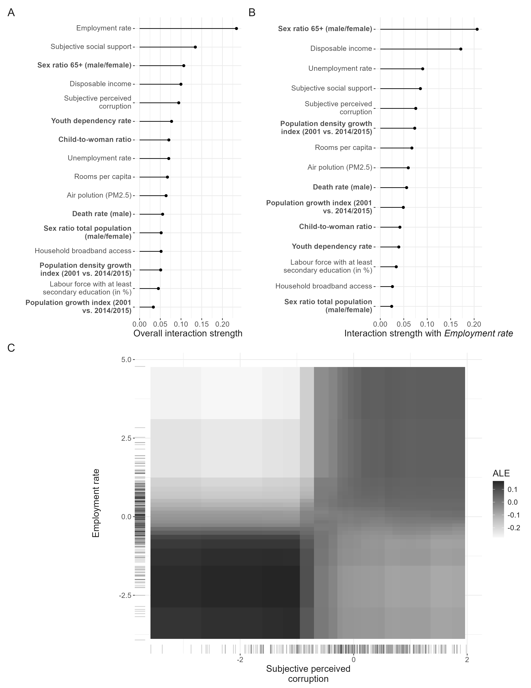
Abstract
Subjective Well-Being (SWB) has emerged as a key measure in assessing societal progress beyond traditional economic indicators like GDP. While SWB is shaped by diverse socio-economic factors, most quantitative studies use limited variables and overlook non-linearities and interactions. We address these gaps by applying random forests to predict regional SWB averages across 388 OECD regions using 2016 data. Our model identifies 16 key predictors of regional SWB, revealing significant non-linearities and interactions among variables. Notably, the sex ratio among the elderly, a factor underexplored in existing literature, emerges as a predictor comparable in importance to average disposable income. Interestingly, regions with below-average employment and elderly sex ratios show higher SWB than average, but this trend reverses at higher levels. This study highlights the potential of machine learning to explore complex socio-economic systems, connecting data-driven insights with theory-building. By incorporating multidimensionality and non-linear interactions, our approach offers a robust framework for analyzing SWB and informing policy design.
Links
Published paper
Available data & code
Code to reproduce the paper’s results
All the data and code is available from the data & code link. After the download, you can unzip the files and open the included R-studio project. It also includes the below presented code document to reproduce the paper’s results.
Code document
First, predictors are selected based on random forest importance following several steps to consequently reduce the number of predictors on the dataset. The final predictors are chosen based on the minimal out-of-bag errors (OOB). After the variable selection is done, the final random forest model is determined via hypertuning all the parameters in the model based on reducing the prediction error the models produce. With the final model, model agnostics are run to understand and interpret the model. For this, plots are produced showing the predictor importance, the functional form of the predictors in predicting subjective well-being, their interaction strength, and finally the functional form of one particular interaction.
Variable selection
The function to select the features comes from https://github.com/SimonLarsen/varSelRanger/blob/master/R/varSelRanger.R. The following code loads the data. If it is not available yet, a script is run that compiles the dataset produced from the different OECD regional databases1. Then, the variable selection is run via the above mentioned code and the respective plot and table found in the main manuscript is produced.
require(ranger)
set.seed(4595)
if (!("data.rds" %in% list.files("data/processed_data"))) {
source("R/1_gathering_OECD_data_regional_2016.R")
}
new.sample <- read_rds("data/processed_data/data.rds") %>%
ungroup %>%
dplyr::select(2:length(names(.)))
varSelRanger <- function(data,
dependent.variable.name,
formula = NULL,
frac = 0.2,
min.vars = 1,
importance = "impurity",
...) {
if (!is.null(formula))
stop("The formula interface is not supported yet.")
if (!any(c("data.frame", "matrix", "Matrix") %in% class(data)))
stop("'data' must be a data frame or matrix.")
if (!is.numeric(frac))
stop("'frac' must be numeric.")
if (frac <= 0 ||
frac >= 1)
stop("'frac' must be greater than 0 and less than 1.")
vars <- setdiff(colnames(data), dependent.variable.name)
selected.vars <- NULL
errors <- NULL
while (length(vars) >= min.vars) {
data <- data[, c(vars, dependent.variable.name), drop = FALSE]
fit <- ranger(
data = data,
dependent.variable.name = dependent.variable.name,
importance = importance,
...
)
selected.vars <- c(selected.vars, list(vars))
errors <- c(errors, fit$prediction.error)
imp <- sort(fit$variable.importance, TRUE)
nsel <- floor(length(imp) * (1 - frac))
vars <- names(head(imp, nsel))
}
list(selected.vars = selected.vars, errors = errors)
}
selectvar <- varSelRanger(data = new.sample, dependent.variable.name = "SUBJ_LIFE_SAT", )
selection_data <- unlist(lapply(selectvar, function(y)
lapply(y, function(x)
length(x)))) %>% as.data.frame() %>%
rownames_to_column() %>% filter(substr(rowname, 1, 3) == "sel") %>% mutate(error = selectvar$errors) %>%
dplyr::select("no_variables" = 2, "oob" = error)
## minimum error
selection_data %>% filter(oob == min(oob)) no_variables oob
1 20 0.2302558## labels for plot
selection_data <- selection_data %>% mutate(
label = case_when(
oob == min(oob) ~ "Minimum",
no_variables == 16 ~ "Our chosen configuration"
),
nudge_y = case_when(oob == min(oob) ~ 0.15, no_variables == 16 ~ -0.1)
)
selection_data %>%
ggplot() +
geom_point(aes(x = no_variables, y = oob), size = 3, alpha = 0.5) +
# geom_point(data = selection_data %>% filter(oob %in% min(oob) | no_variables == 12),
# aes(x = no_variables, y = oob),
# size = 5.5,
# shape = 21,
# fill = "grey40",
# color = "grey20",
# stroke = 2) +
geom_segment(aes(
x = 20,
xend = 20,
y = 0.4,
yend = 0.3
), arrow = arrow(length = unit(0.03, "npc"))) +
geom_segment(aes(
x = 16,
xend = 16,
y = 0.12,
yend = 0.20
), arrow = arrow(length = unit(0.03, "npc"))) +
geom_label(aes(
label = label,
x = no_variables,
y = oob + nudge_y
), nudge_x = -3) +
xlab("Number of predictors") +
ylab("Out-of-bag error") +
scale_x_reverse() +
theme_plots()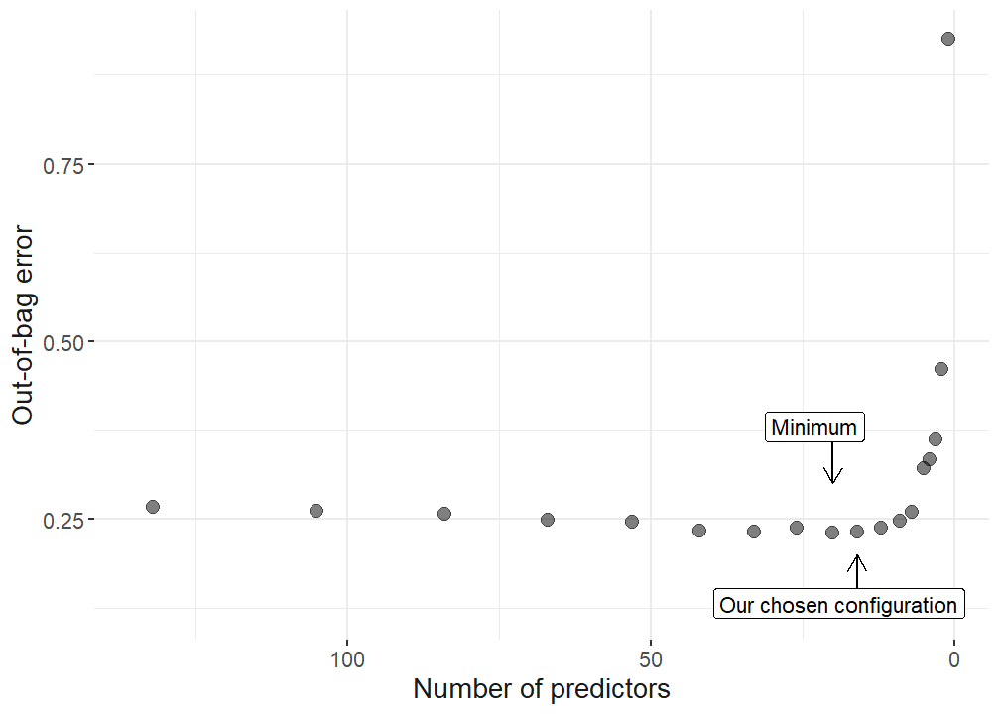
ggsave(
"plots/variable_selection.pdf",
width = 10,
height = 7,
scale = 0.75
)
# use 12 variables, as this does not signiicantly increase the OOB but reduces the amount of variables from 26 to 12 which makes the upcoming analysis more accessible.
## best at 26 variables
#lapply(selectvar$selected.vars, function(x) cor(new.sample %>% select(all_of(x))) %>% .[. != 1] %>% hist())
selectd_vars_vec <- selectvar$selected.vars[[10]]
selectvar$selected.vars[[10]] [1] "EMP_RA" "SR_ELD_RA_T" "INCOME_DISP" "UNEM_RA"
[5] "SUBJ_SOC_SUPP" "SUBJ_PERC_CORR" "POP_DEN_GR_T" "ROOMS_PC"
[9] "AIR_POL" "DEATH_RA_M" "POP_TOT_GI_T" "KID_WOM_RA_T"
[13] "YOU_DEP_RA_T" "EDU38_SH" "BB_ACC" "SR_TOT_RA_T" # latex table with all variables
orig_data <- read_rds("data/processed_data/data_unscaled.rds") %>% dplyr::select(all_of(c(selectd_vars_vec, "SUBJ_LIFE_SAT")))
#prettynames
pretty_names = c(
"Employment rate",
"Sex ratio 65+ (male/female)",
"Disposable income",
"Unemployment rate",
"Subjective social support",
"Subjective perceived corruption",
"Population density growth index (2001 vs. 2014/2015)",
"Rooms per capita",
"Air polution (PM2.5)",
"Death rate (male)",
"Population growth index (2001 vs. 2014/2015)",
"Child-to-woman ratio",
"Household broadband access",
"Youth dependency rate",
"Sex ratio total population (male/female)",
"Labour force with at least secondary education (in %)",
"Subjective Wellbeing"
)
pretty_names_dat <- data.frame(var = c(selectd_vars_vec, "SUBJ_LIFE_SAT")) %>%
mutate(
pretty_names = case_match(
var,
"EMP_RA" ~ "Employment rate",
"SR_ELD_RA_T" ~ "Sex ratio 65+ (male/female)",
"INCOME_DISP" ~ "Disposable income",
"UNEM_RA" ~ "Unemployment rate",
"SUBJ_SOC_SUPP" ~ "Subjective social support",
"SUBJ_PERC_CORR" ~ "Subjective perceived corruption",
"POP_DEN_GR_T" ~ "Population density growth index (2001 vs. 2014/2015)",
"ROOMS_PC" ~ "Rooms per capita",
"AIR_POL" ~ "Air polution (PM2.5)",
"DEATH_RA_M" ~ "Death rate (male)",
"POP_TOT_GI_T" ~ "Population growth index (2001 vs. 2014/2015)",
"KID_WOM_RA_T" ~ "Child-to-woman ratio",
"YOU_DEP_RA_T" ~ "Youth dependency rate",
"EDU38_SH" ~ "Labour force with at least secondary education (in %)",
"BB_ACC" ~ "Household broadband access",
"SR_TOT_RA_T" ~ "Sex ratio total population (male/female)",
"SUBJ_LIFE_SAT" ~ "Subjective Wellbeing"
)
) %>%
mutate(pretty_short = str_wrap_br(pretty_names, 30)) %>%
left_join(
read.csv("data/meta_data/variables.csv"),
by = c("var" = "VAR"),
multiple = "first"
)
latex_data <- data.frame(
#var = selectd_vars_vec,
"Predictor/Outcome" = pretty_names_dat$pretty_names,
"Database" = pretty_names_dat$database,
"Mean" = orig_data %>% summarise(across(where(is.numeric), mean)) %>% as.numeric(as.vector(.[1, ])) %>% round(., 2),
"SD" = orig_data %>% summarise(across(where(is.numeric), sd)) %>% as.numeric(as.vector(.[1, ])) %>% round(., 2)
)
latex_table <- latex_data %>%
knitr::kable(format = "latex",
caption = 'Summary statistics',
booktabs = TRUE) %>%
kableExtra::pack_rows(index = c("Regressors" = 16, "Outcome variable" = 1))The number of variables was reduced from 134 available variables to sixteen final predictors. The next step is to hypertune the parameters to get the final random forest model that will be used to compute model agnostics.
Correlation among predictors
We want to learn about the correlations of our final predictors, as this is valuable information. For this purpose, we create a graphical representation of the correlations.
As a next step, we compute a correlation matrix for our final variables.
# Select variables used in the regression
variables_used <- orig_data %>% dplyr::select(all_of(selectd_vars_vec))
# use the other variable names
if (all(colnames(variables_used) == pretty_names_dat$var[1:16]) == TRUE) {
colnames(variables_used) <- pretty_names_dat$pretty_names[1:16]
}
# Compute the correlation matrix
cor_matrix <- cor(variables_used, use = "complete.obs")
pdf("plots/corrplot.pdf", width = 12, height = 12)
corrplot::corrplot(
cor_matrix,
type = "lower",
order = "hclust",
addCoef.col = "black",
# Add coefficient of correlation
tl.col = "black",
#Text label color and rotation
# Combine with significance
sig.level = 0.01,
insig = "blank",
# hide correlation coefficient on the principal diagonal
diag = FALSE,
number.font = 2,
number.digits = 1 ,
method = "color"
)
dev.off()png
2 png("plots/corrplot.png", width = 1000, height = 1000)
corrplot::corrplot(
cor_matrix,
type = "lower",
order = "hclust",
addCoef.col = "black",
# Add coefficient of correlation
tl.col = "black",
#Text label color and rotation
# Combine with significance
sig.level = 0.01,
insig = "blank",
# hide correlation coefficient on the principal diagonal
diag = FALSE,
number.font = 2,
number.digits = 1 ,
method = "color"
)
dev.off()png
2 corrplot::corrplot(
cor_matrix,
type = "lower",
order = "hclust",
addCoef.col = "black",
# Add coefficient of correlation
tl.col = "black",
#Text label color and rotation
# Combine with significance
sig.level = 0.01,
insig = "blank",
# hide correlation coefficient on the principal diagonal
diag = FALSE,
number.font = 2,
number.digits = 1 ,
method = "color"
)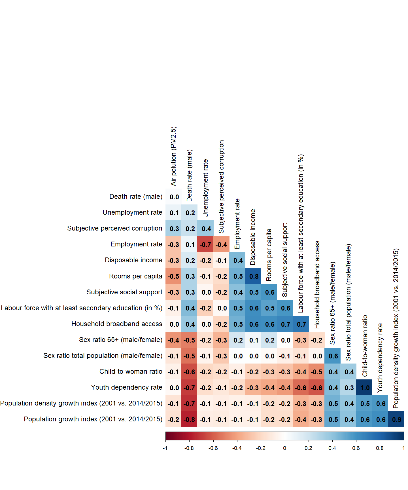
Hypertuning
In the following a final random forest model is hypertuned. For that purpose, different configurations of the model are run with different combinations of model parameters. The combination that minimized the errors in the prediction is chosen.
First, the data is prepared and distributed into training and test data.
## this script uses the tidymodels workflow for our ml wellbeing study
require(tidymodels)
set.seed(4595)
# data
regression_data <- new.sample %>% dplyr::select(all_of(c(selectd_vars_vec, "SUBJ_LIFE_SAT")))
data_split <- initial_split(regression_data, strata = "SUBJ_LIFE_SAT", prop = 0.75)
sample_train <- training(data_split)
sample_test <- testing(data_split)
rf_defaults <- rand_forest(mode = "regression")
rf_defaultsRandom Forest Model Specification (regression)
Computational engine: ranger predicted <- names(sample_train)
predicted <- predicted[predicted != "SUBJ_LIFE_SAT"]Then, the RF model is trained via a hypertuning process.
set.seed(4595)
require(tidymodels)
require(future)
require(doFuture)
# Set the RNG kind for parallel reproducibility
RNGkind("L'Ecuyer-CMRG")
set.seed(4595)
# Set up future parallel backend
registerDoFuture()
plan(multisession, workers = availableCores() - 1)
# Rest of your code stays the same...
rf_model <-
parsnip::rand_forest(
mode = "regression",
trees = tune(),
mtry = tune(),
min_n = tune()
) %>%
set_engine("ranger", num.threads = 1, seed = 4595) # Add seed to ranger
rf_params <- dials::parameters(trees(), finalize(mtry(), sample_train), min_n())
rf_grid <- dials::grid_space_filling(rf_params, size = 60)
rf_wf <-
workflows::workflow() %>%
add_model(rf_model) %>%
add_formula(SUBJ_LIFE_SAT ~ .)
preprocessing_recipe <-
recipes::recipe(SUBJ_LIFE_SAT ~ ., data = sample_train) %>%
recipes::step_string2factor(all_nominal()) %>%
recipes::step_other(all_nominal(), threshold = 0.01) %>%
recipes::step_nzv(all_nominal()) %>%
prep()
wellbeing_cv_folds <-
recipes::bake(preprocessing_recipe, new_data = sample_train) %>%
rsample::vfold_cv(v = 5)
rf_tuned <- tune::tune_grid(
object = rf_wf,
resamples = wellbeing_cv_folds,
grid = rf_grid,
metrics = yardstick::metric_set(rmse, rsq, mae),
control = tune::control_grid(verbose = TRUE)
)
plan(sequential)
rf_best_params <- rf_tuned %>%
tune::select_best(metric = "rmse")
rf_model_final <- rf_model %>%
finalize_model(rf_best_params)
rf_best_params# A tibble: 1 × 4
mtry trees min_n .config
<int> <int> <int> <chr>
1 6 1085 2 pre0_mod22_post0rf_prediction <- rf_model_final %>%
fit(formula = SUBJ_LIFE_SAT ~ ., data = sample_train)Model comparison - XGBoost
Here, we train the XGBoost model.
set.seed(4595)
require(xgboost)
# Set RNG for parallel reproducibility
RNGkind("L'Ecuyer-CMRG")
set.seed(4595)
# Set up future parallel backend
registerDoFuture()
plan(multisession, workers = availableCores() - 1)
cat("Number of workers:", nbrOfWorkers(), "\n")Number of workers: 7 # XGBoost model specification
xgboost_model <-
parsnip::boost_tree(
mode = "regression",
trees = 1000,
min_n = tune(),
tree_depth = tune(),
learn_rate = tune(),
loss_reduction = tune()
) %>%
set_engine("xgboost",
objective = "reg:squarederror",
nthread = 1, # Use 1 thread per model
seed = 4595) # XGBoost internal seed
# grid specification
xgboost_params <-
dials::parameters(min_n(), tree_depth(), learn_rate(), loss_reduction())
xgboost_grid <-
dials::grid_max_entropy(xgboost_params, size = 60)
knitr::kable(head(xgboost_grid))| min_n | tree_depth | learn_rate | loss_reduction |
|---|---|---|---|
| 19 | 6 | 0.0000001 | 0.0003137 |
| 40 | 11 | 0.0000000 | 0.0000003 |
| 21 | 9 | 0.0002206 | 0.0000134 |
| 25 | 5 | 0.0000050 | 3.7195118 |
| 10 | 5 | 0.0000141 | 0.0000035 |
| 17 | 8 | 0.0355548 | 6.0162432 |
xgboost_wf <-
workflows::workflow() %>%
add_model(xgboost_model) %>%
add_formula(SUBJ_LIFE_SAT ~ .)
# hyperparameter tuning
xgboost_tuned <- tune::tune_grid(
object = xgboost_wf,
resamples = wellbeing_cv_folds,
grid = xgboost_grid,
metrics = yardstick::metric_set(rmse, rsq, mae),
control = tune::control_grid(verbose = TRUE)
)
plan(sequential)
xgboost_tuned %>%
tune::show_best(metric = "rmse") %>%
knitr::kable()| min_n | tree_depth | learn_rate | loss_reduction | .metric | .estimator | mean | n | std_err | .config |
|---|---|---|---|---|---|---|---|---|---|
| 18 | 12 | 0.0059279 | 0.0000005 | rmse | standard | 0.4874019 | 5 | 0.0265237 | pre0_mod28_post0 |
| 4 | 2 | 0.0090277 | 0.0000000 | rmse | standard | 0.4880999 | 5 | 0.0261845 | pre0_mod04_post0 |
| 17 | 8 | 0.0051652 | 0.0000001 | rmse | standard | 0.4942764 | 5 | 0.0259318 | pre0_mod26_post0 |
| 14 | 14 | 0.0690032 | 0.0055577 | rmse | standard | 0.4958214 | 5 | 0.0229386 | pre0_mod20_post0 |
| 6 | 12 | 0.0157471 | 0.0000000 | rmse | standard | 0.5045736 | 5 | 0.0357911 | pre0_mod10_post0 |
xgboost_best_params <- xgboost_tuned %>%
tune::select_best()
knitr::kable(xgboost_best_params)| min_n | tree_depth | learn_rate | loss_reduction | .config |
|---|---|---|---|---|
| 18 | 12 | 0.0059279 | 5e-07 | pre0_mod28_post0 |
xgboost_model_final <- xgboost_model %>%
finalize_model(xgboost_best_params)
# Final fit with multiple threads
xgboost_prediction <- xgboost_model_final %>%
set_engine("xgboost",
objective = "reg:squarederror",
nthread = availableCores() - 1,
seed = 4595) %>%
fit(formula = SUBJ_LIFE_SAT ~ ., data = sample_train)Model comparison between RF, OLS and XGB
# linear model as comparison
lm_mod <- linear_reg()
lm_fit <-
lm_mod %>%
fit(SUBJ_LIFE_SAT ~ ., data = sample_train)
tidy(lm_fit, conf.int = T)# A tibble: 17 × 7
term estimate std.error statistic p.value conf.low conf.high
<chr> <dbl> <dbl> <dbl> <dbl> <dbl> <dbl>
1 (Intercept) 0.0212 0.0345 0.615 0.539 -0.0467 0.0891
2 EMP_RA 0.185 0.0687 2.69 0.00761 0.0495 0.320
3 SR_ELD_RA_T 0.331 0.0645 5.13 0.000000539 0.204 0.458
4 INCOME_DISP -0.0538 0.0763 -0.705 0.482 -0.204 0.0965
5 UNEM_RA -0.0285 0.0602 -0.474 0.636 -0.147 0.0900
6 SUBJ_SOC_SUPP 0.136 0.0521 2.61 0.00960 0.0333 0.238
7 SUBJ_PERC_CORR -0.171 0.0471 -3.63 0.000333 -0.264 -0.0784
8 POP_DEN_GR_T 0.0487 0.0807 0.604 0.547 -0.110 0.208
9 ROOMS_PC 0.126 0.0811 1.55 0.123 -0.0341 0.285
10 AIR_POL -0.0886 0.0487 -1.82 0.0700 -0.184 0.00728
11 DEATH_RA_M -0.0955 0.0766 -1.25 0.214 -0.246 0.0554
12 POP_TOT_GI_T 0.102 0.0977 1.05 0.296 -0.0900 0.295
13 KID_WOM_RA_T -0.457 0.171 -2.67 0.00799 -0.793 -0.120
14 YOU_DEP_RA_T 0.617 0.206 2.99 0.00301 0.211 1.02
15 EDU38_SH 0.357 0.0708 5.05 0.000000825 0.218 0.496
16 BB_ACC 0.0678 0.0727 0.932 0.352 -0.0754 0.211
17 SR_TOT_RA_T -0.139 0.0557 -2.50 0.0129 -0.249 -0.0297 test_results <-
sample_test %>%
dplyr::select(SUBJ_LIFE_SAT) %>%
bind_cols(predict(rf_prediction, new_data = sample_test[, predicted])) %>%
rename(rm_fit = .pred) %>%
bind_cols(predict(lm_fit, new_data = sample_test[, predicted]) %>%
rename(lm_fit = .pred)) %>%
bind_cols(
predict(xgboost_prediction, new_data = sample_test[, predicted]) %>%
rename(xgboost_prediction = .pred)
)
test_results %>%
metrics(truth = SUBJ_LIFE_SAT, estimate = rm_fit) %>%
mutate(model = "rf") %>%
rbind(
test_results %>%
metrics(truth = SUBJ_LIFE_SAT, estimate = lm_fit) %>%
mutate(model = "lm"),
test_results %>%
metrics(truth = SUBJ_LIFE_SAT, estimate = xgboost_prediction) %>%
mutate(model = "xgb")
)# A tibble: 9 × 4
.metric .estimator .estimate model
<chr> <chr> <dbl> <chr>
1 rmse standard 0.523 rf
2 rsq standard 0.778 rf
3 mae standard 0.404 rf
4 rmse standard 0.621 lm
5 rsq standard 0.666 lm
6 mae standard 0.493 lm
7 rmse standard 0.532 xgb
8 rsq standard 0.756 xgb
9 mae standard 0.407 xgb test_results %>%
gather(model, prediction, -SUBJ_LIFE_SAT) %>%
ggplot(aes(x = prediction, y = SUBJ_LIFE_SAT)) +
geom_abline(col = "green", lty = 2) +
geom_point(alpha = .4) +
facet_wrap( ~ model) +
coord_fixed()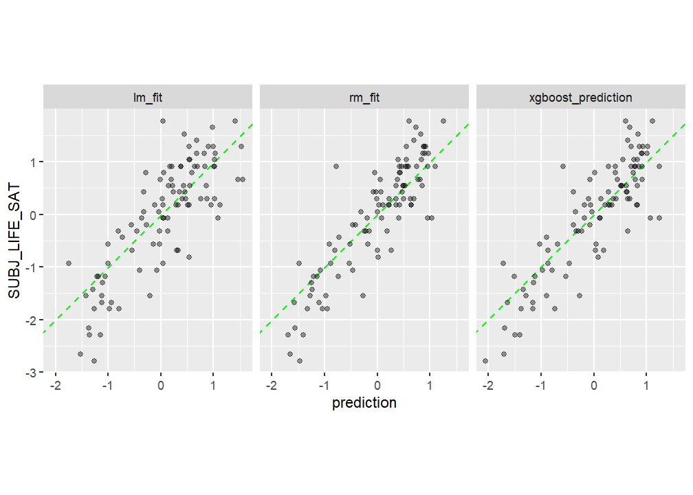
Model agnostics
As a next step the final model agnostics are computed for the final models (RF and XGBoost). These are * variable importance * ALE plots * variable interaction
From the variable interaction, the variable which variance is dependent the most on interactions with other variables is investigated further. All this is done using the IML package2.
Variable importance
## initialise iml package, as in https://uc-r.github.io/iml-pkg
require(iml)
## add parallisation
require("future")
require("future.callr")
# pred <- function(X.model, newdata) {
# predict(X.model, newdata, type = "numeric")$predictions
# #return(results)
# }
# 1. create a data frame with just the features
features <- as.data.frame(regression_data) %>% dplyr::select(-SUBJ_LIFE_SAT)
predictor.rf <- Predictor$new(
model = rf_prediction,
data = features,
y = regression_data$"SUBJ_LIFE_SAT"
# predict.fun = pred
)
predictor.xgb <- Predictor$new(
model = xgboost_prediction,
data = features,
y = regression_data$"SUBJ_LIFE_SAT"
# predict.fun = pred
)
imp.rf <- FeatureImp$new(predictor.rf, loss = "mse", n.repetitions = 100)
imp.xgb <- FeatureImp$new(predictor.xgb, loss = "mse", n.repetitions = 100)
# bold for indicators from demographic database
pretty_names_dat$pretty_short = ifelse(
pretty_names_dat$database == "Demographic",
paste0("**", pretty_names_dat$pretty_short, "**"),
pretty_names_dat$pretty_short
)
pretty_sorted_rf <- rev(pretty_names_dat$pretty_short[match(imp.rf$results$feature, pretty_names_dat$var)])
pretty_sorted_xgb <- rev(pretty_names_dat$pretty_short[match(imp.xgb$results$feature, pretty_names_dat$var)])
#pretty_sorted
# to adjust the variable text
library(ggtext)
importance_plot_rf <- plot(imp.rf) + scale_y_discrete(labels = pretty_sorted_rf) + ylab("") +
scale_x_continuous("Predictor importance (loss: MSE)") +
theme_plots() +
theme(axis.text.y = element_markdown())
importance_plot_xgb <- plot(imp.xgb) + scale_y_discrete(labels = pretty_sorted_xgb) + ylab("") +
scale_x_continuous("Predictor importance (loss: MSE)") +
ggtitle("XGBoost") +
theme_plots() +
theme(axis.text.y = element_markdown())
importance_plot_rf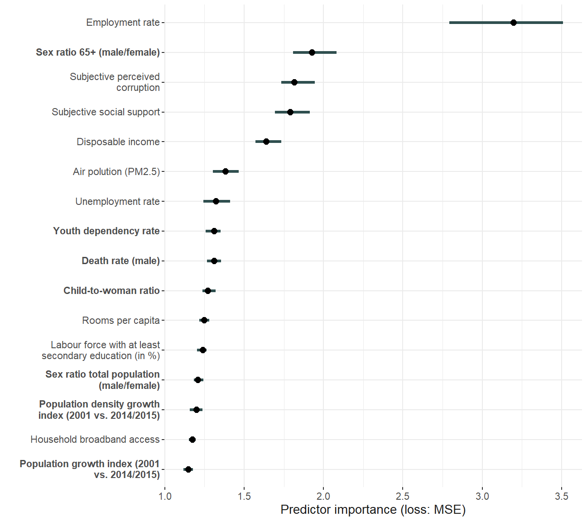
ggsave(
"plots/importance_plot.pdf",
importance_plot_rf,
scale = 1.7,
width = 13,
height = 11,
units = "cm"
)
library(patchwork)
robustness_importance <- importance_plot_rf +
ggtitle("Random Forest") + importance_plot_xgb
robustness_importance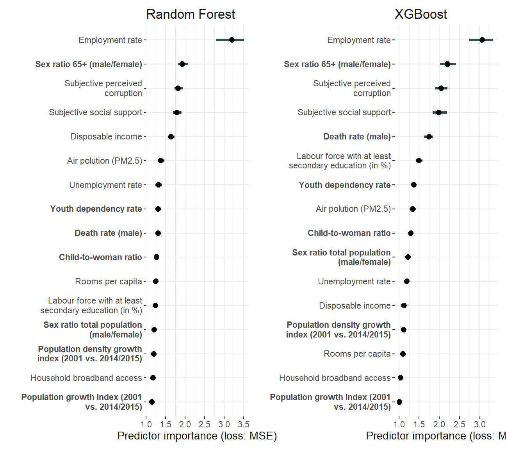
ggsave(
"plots/robustness/importance_plot_comparison.pdf",
robustness_importance,
scale = 1.7,
width = 18,
height = 11,
units = "cm"
)ALE plots
Accumulated Local Effect (ALE) plots are computed and plotted to investigate the functional form of predictors when predicting subjective well-being.
ale_plotting <- function(predictor, importance, model) {
ale <- FeatureEffects$new(predictor, method = "ale")
# order of features based on importance
order_features <- importance$results$feature
ale_plot <- plot(ale, features = order_features)
#min max of ale values
ales <- lapply(1:length(ale_plot), function(x)
ale_plot[[x]]$data) %>% bind_rows
min(ales$.value)
max(ales$.value)
adj_ale_plots <- ale_plot
# change plot x axis to pretty names
if (model == "rf") {
for (i in 1:length(order_features)) {
adj_ale_plots[[i]] <- ale_plot[[i]] +
labs(x = rev(pretty_sorted_rf)[i], y = "") +
theme_plots() +
#scale_y_continuous(name="ALE of SWB")+
theme(axis.title.y = element_blank(), axis.title.x = element_markdown())
}
} else{
for (i in 1:length(order_features)) {
adj_ale_plots[[i]] <- ale_plot[[i]] +
labs(x = rev(pretty_sorted_xgb)[i], y = "") +
theme_plots() +
#scale_y_continuous(name="ALE of SWB")+
theme(axis.title.y = element_blank(), axis.title.x = element_markdown())
}
}
adj_ale_plots <- adj_ale_plots +
patchwork::plot_annotation("") &
theme(text = element_text(size = 10))
return(adj_ale_plots)
}
ale_rf <- ale_plotting(predictor = predictor.rf, imp.rf, model = "rf")
ale_xgb <- ale_plotting(predictor = predictor.xgb, imp.xgb, model = "xgb")
# save plot, need to adjust titel, etc. ----
ale_rf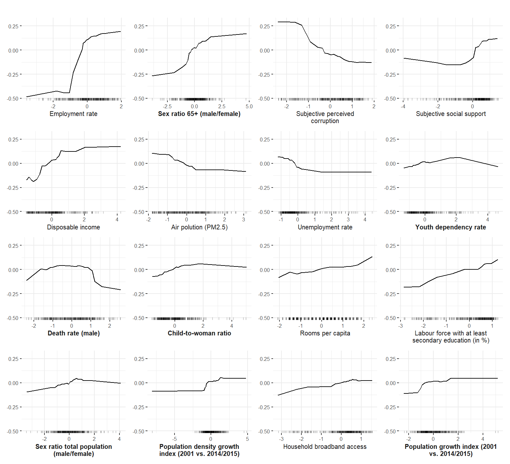
ggsave(
"plots/ale_plot.pdf",
ale_rf,
scale = 1.75,
width = 13,
units = "cm"
)
ale_xgb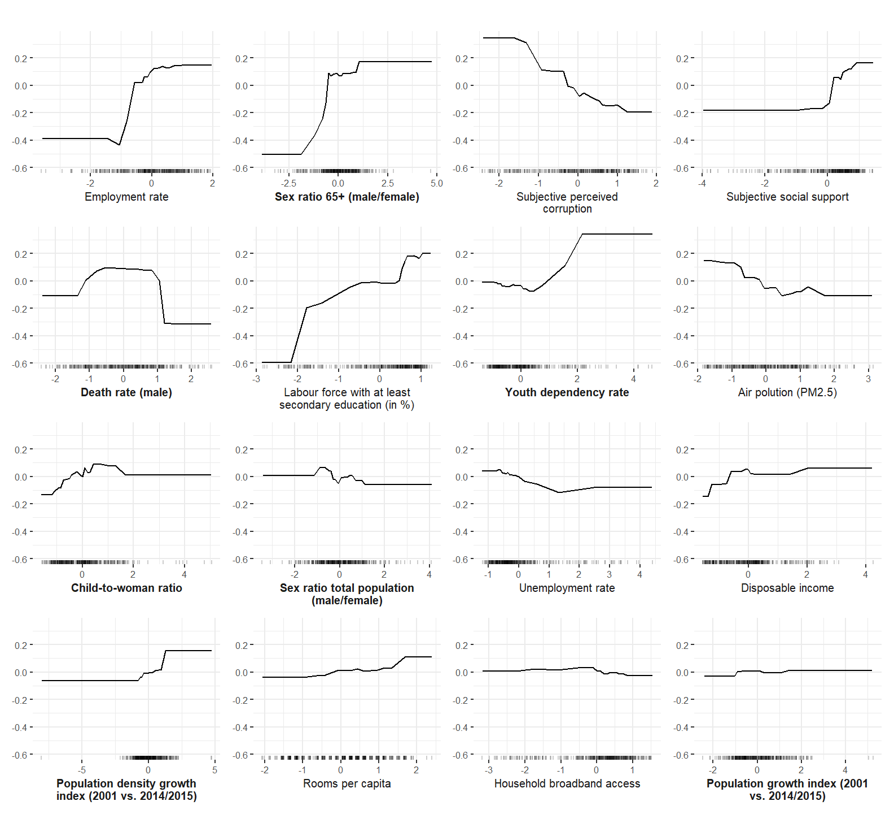
ggsave(
"plots/robustness/ale_plot_xgb.pdf",
ale_xgb,
scale = 1.75,
width = 13,
units = "cm"
)Interactions
In the following code, the interactions of all predictors are computed.
## interactions
interaction_plot <- function(predictor) {
plan("callr", workers = 4)
interact <- Interaction$new(predictor)
pretty_sorted_interact <- interact$results %>% arrange(.interaction) %>% left_join(pretty_names_dat, by = c(".feature" = "var")) %>% pull(pretty_short)
adj_interact_plot <- plot(interact) + scale_y_discrete(labels = pretty_sorted_interact) +
ylab("") +
theme_plots() +
theme(axis.text.y = element_markdown())
return(adj_interact_plot)
}
int_plot_rf <- interaction_plot(predictor.rf)
ggsave("plots/interactions_plot.pdf",
int_plot_rf,
width = 13,
units = "cm")
int_plot_xgb <- interaction_plot(predictor.xgb) + ggtitle("XGBoost")
interaction_robustness <- int_plot_rf + ggtitle("Random Forest") + int_plot_xgb
interaction_robustness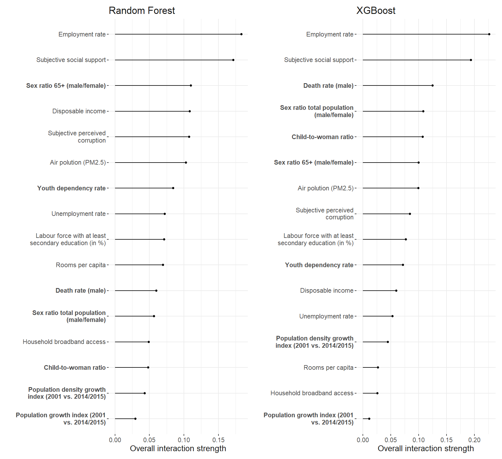
ggsave(
"plots/robustness/interactions_plot.pdf",
interaction_robustness,
width = 25,
units = "cm"
)The employment rate shows the strongest interaction among all the predictors. So we investigate it further.
Interactions with employment rate
Now, which predictors interaction the strongest with the employment rate.
interaction_plot <- function(variable, model) {
plan("callr", workers = 4)
interactions <- Interaction$new(model, feature = variable)
pretty_short_emp_ra <- interactions$results %>%
as_tibble() %>%
arrange(".interaction") %>%
separate(.feature, into = c("var", "emp_ra"), sep = ":") %>%
left_join(pretty_names_dat, by = c("var")) %>%
pull(pretty_short)
plot_emp_ra <- plot(interactions) +
ylab("") +
scale_y_discrete(labels = rev(pretty_short_emp_ra)) +
scale_x_continuous(name = "Interaction strength with *Employment rate*") +
theme_plots() +
theme(
axis.text.y = ggtext::element_markdown(),
axis.title.x = ggtext::element_markdown()
)
return(plot_emp_ra)
}
plot_int_emp_rf <- interaction_plot("EMP_RA", predictor.rf)
plot_int_emp_rf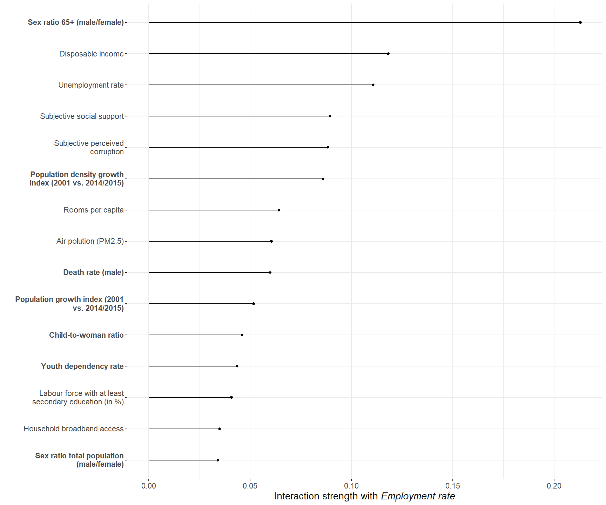
ggsave(
"plots/interactions_emp_ra_plot.pdf",
plot_int_emp_rf,
width = 13,
units = "cm"
)
plot_int_emp_xgb <- interaction_plot("EMP_RA", predictor.xgb) + ggtitle("XGBoost")
int_emp_robustness <- plot_int_emp_rf + ggtitle("Random Forest") + plot_int_emp_xgb
int_emp_robustness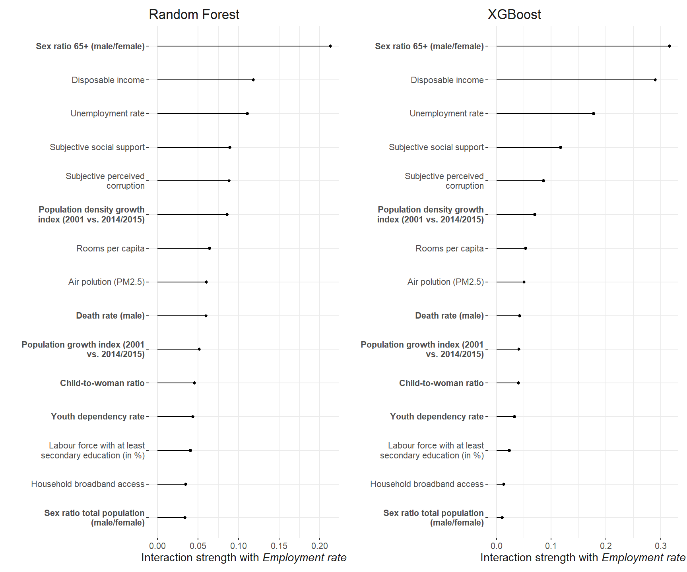
ggsave(
"plots/robustness/interactions_emp_ra_plot_robustness.pdf",
int_emp_robustness,
width = 13,
units = "cm",
height = 9,
scale = 2.4
)Interaction plot from manuscript
Finally, the functional form of the interaction of the employment rate and the sex ratio of the elderly is computed and plotted. The final plot from the manuscript in which the different interactions are depicted is compiled below.
plan("callr", workers = 4)
ale_interactions <- FeatureEffect$new(predictor.rf,
method = "ale",
feature = c("EMP_RA", "SR_ELD_RA_T"))
interaction_ale_one <- plot(ale_interactions) +
scale_fill_distiller(type = "seq",
direction = 1,
palette = "Greys") +
# this is the only way to change the ylab and xlab
scale_y_continuous(name = pretty_sorted_rf[16]) +
scale_x_continuous(name = pretty_sorted_rf[15]) +
theme_plots() +
labs(fill = "ALE") +
theme(plot.margin = margin(5, 5, 5, 5))
interaction_ale_rf <- interaction_ale_one +
theme(
#axis.title.y = element_text(vjust = -40),
axis.title.x = element_markdown(),
plot.margin = margin(1, 1, 1, 1)
)
interaction_ale_rf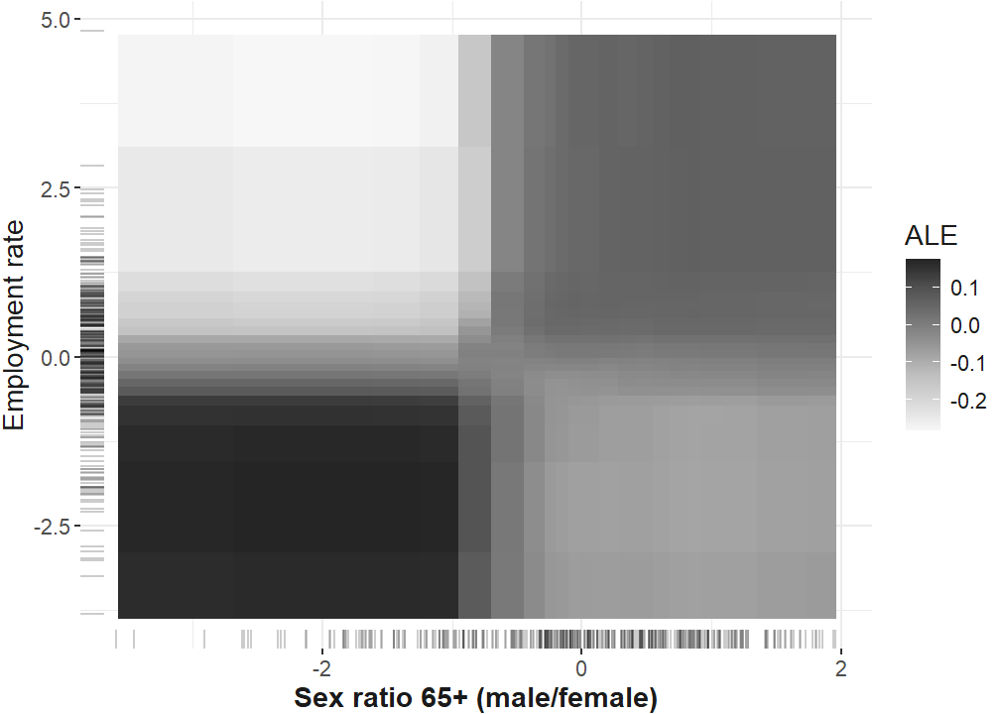
ggsave(
"plots/robustness/interactions_ale_rf.pdf",
interaction_ale_rf,
width = 15,
units = "cm",
scale = 1.8
)# plot for publication
require(patchwork)
# define plot layout
layout <- c(patchwork::area(1, 1),
patchwork::area(1, 2),
patchwork::area(2, 1, 2, 2))
interaction_plots <- int_plot_rf + plot_int_emp_rf + interaction_ale_one +
theme(
axis.title.y = element_text(vjust = -40),
axis.title.x = element_markdown(),
plot.margin = margin(1, 1, 1, 1)
) +
plot_annotation(tag_levels = "A") +
plot_layout(design = layout) &
theme(text = element_text(color = "grey10"))
interaction_plots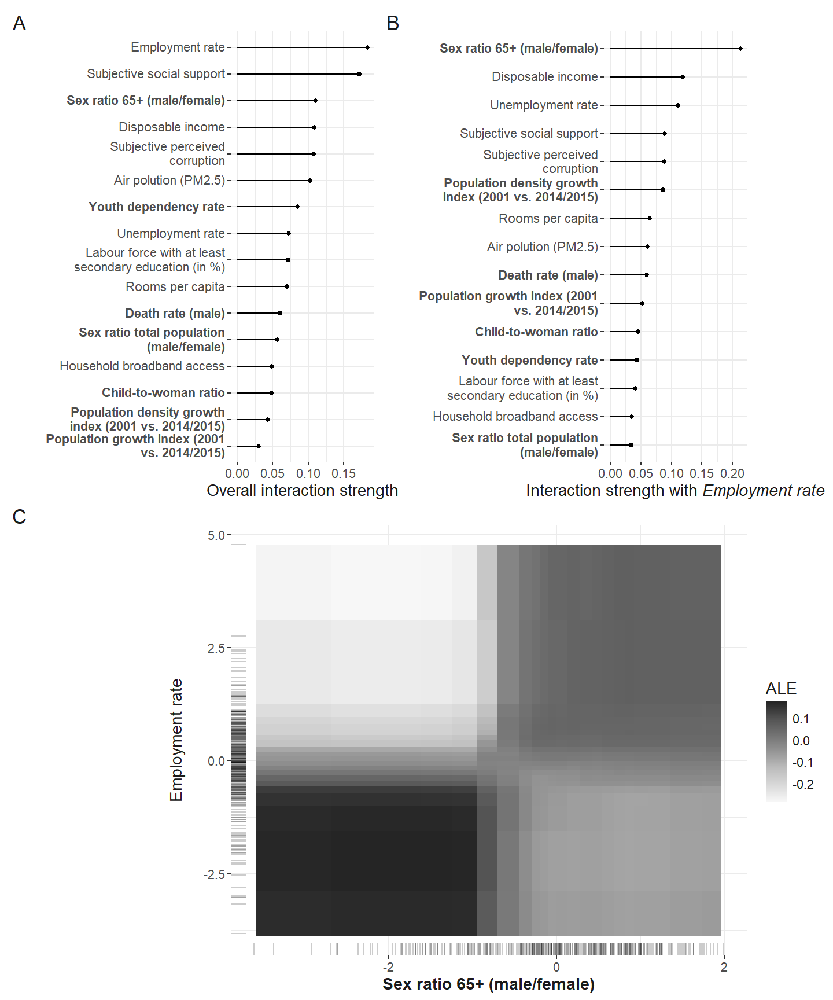
ggsave(
"plots/interactions_all.pdf",
interaction_plots,
width = 15.92,
height = 20.62,
units = "cm",
scale = 1.8
)
ggsave(
"plots/interactions_all.png",
interaction_plots,
width = 15.92,
height = 20.62,
units = "cm",
scale = 1.8
)Interaction robustness plot
plan("callr", workers = 4)
ale_interactions_robustness <- FeatureEffect$new(predictor.xgb,
method = "ale",
feature = c("EMP_RA", "SR_ELD_RA_T"))Warning in merge.data.table(deltas, interval_grid, on = c(".interval1", :
Unknown argument 'on' has been passed.Loading required namespace: yaImputeWarning in merge.data.table(ale, cell.counts.m, on = c(".interval1",
".interval2"), : Unknown argument 'on' has been passed.interaction_ale_two <- plot(ale_interactions_robustness) +
scale_fill_distiller(type = "seq",
direction = 1,
palette = "Greys") +
# this is the only way to change the ylab and xlab
scale_y_continuous(name = pretty_sorted_rf[16]) +
scale_x_continuous(name = pretty_sorted_rf[15]) +
theme_plots() +
labs(fill = "ALE") +
#theme(plot.margin = margin(5,5,5,5))+
theme(
#axis.title.y = element_text(vjust = -40),
axis.title.x = element_markdown(),
plot.margin = margin(1, 1, 1, 1)
)Scale for fill is already present.
Adding another scale for fill, which will replace the existing scale.Scale for y is already present.
Adding another scale for y, which will replace the existing scale.
Scale for x is already present.
Adding another scale for x, which will replace the existing scale.interaction_ale_two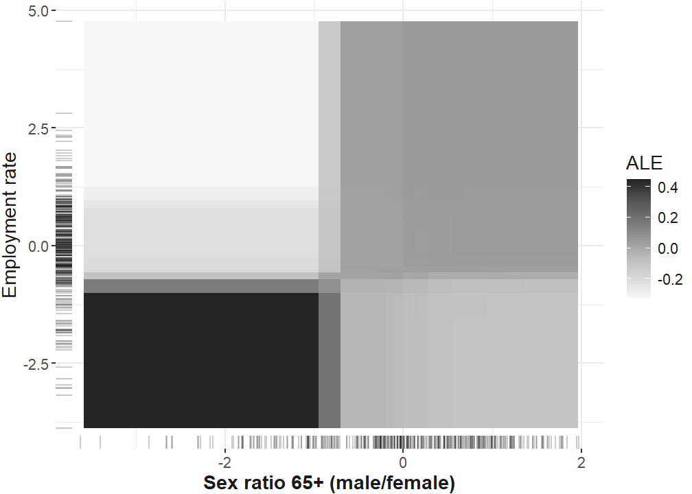
ggsave(
"plots/robustness/interactions_ale_xgb.pdf",
interaction_ale_two,
width = 15,
units = "cm",
scale = 1.8
)Saving 27 x 22.9 cm imageReferences
1.
OECD. OECD regional statistics. (2019).
2.
Molnar, C. Interpretable machine learning. A Guide for Making Black Box Models Explainable. (2022).
Citation
BibTeX citation:
@article{samartzidis2025,
author = {Samartzidis, Lasare},
title = {Gender and Age Matter! {Identifying} Important Predictors for
Subjective Well-Being Using Machine Learning Methods},
journal = {Social Indicators Research},
volume = {179},
number = {2},
pages = {955-978},
date = {2025-09-01},
url = {https://doi.org/10.1007/s11205-025-03643-5},
doi = {10.1007/s11205-025-03643-5},
langid = {en}
}
For attribution, please cite this work as:
Samartzidis, L. Gender and age matter!
Identifying important predictors for subjective well-being using machine
learning methods. Social Indicators Research
179, 955–978 (2025).